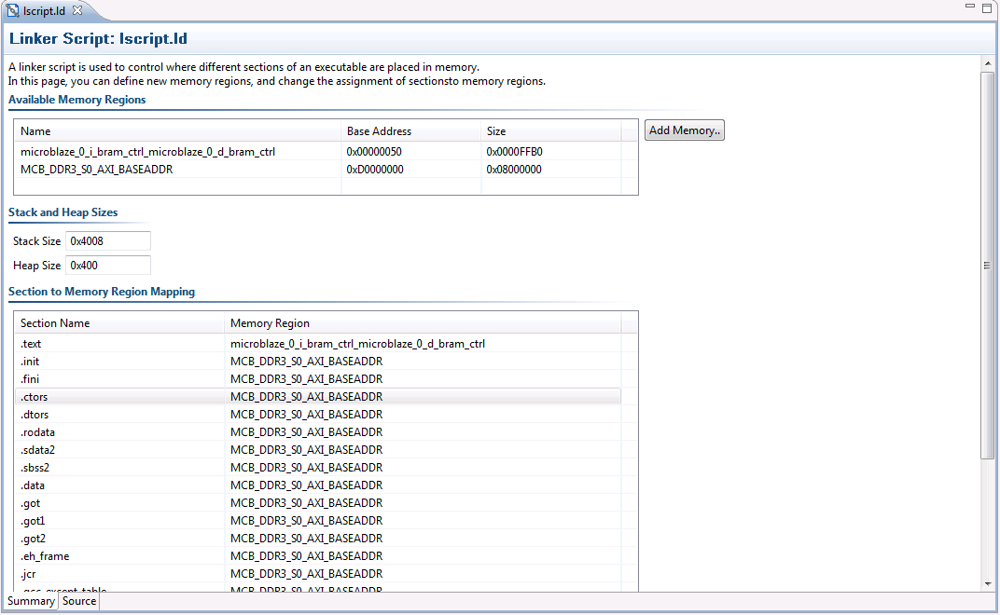

Linker scripts
Once a linker script is generated, there are multiple ways in which it can be updated.

The linker script editor provides the following functionality.
| Name | Function |
|---|---|
| Available Memory Regions | This section lists the memory regions specified in the linker script. You can add a new region by clicking on the Add button to the right. You can modify the name, base address and size of each defined memory region. |
| Stack and Heap Sizes | This section displays the sizes of the stack and heap sections. Simply edit the value in the text box to update the sizes for these sections. |
| Section to Memory Region Mapping | This section provides a way to change the assigned memory region for any section defined in the linker script. To change the assigned memory region, simply click on the memory region to bring a drop down menu from which an alternative memory region can be selected. |

Creating a linker script
Adding the linker script manually
Copyright © 1995-2012 Xilinx, Inc. All rights reserved.